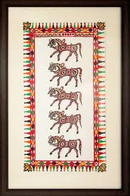

The process begins with 'Lipai' that consists of setting the background of walls with dung,
water and chuna by the unmarried girls. Painted in spectacular and vivid reds,
greens, oranges, blues and pinks, with brushes made from branches of Tendu and Palash
trees. These paintings are distinguished by the lucky and sacred mascots- the horses,
sun and the moon. Birds, animals, trees, etc are also found. Similar to many other types
of tribal paintings, daily activities of rural life such as farming, hunting, ploughing,
and exuberance in festivities like dancing and singing in revelry, depicting social
cohesion are exhibited through colors.
|
 |
|